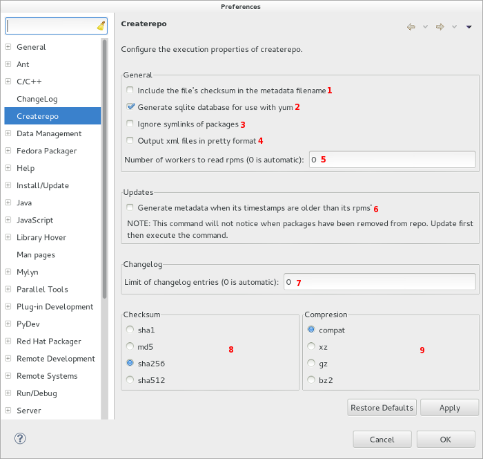
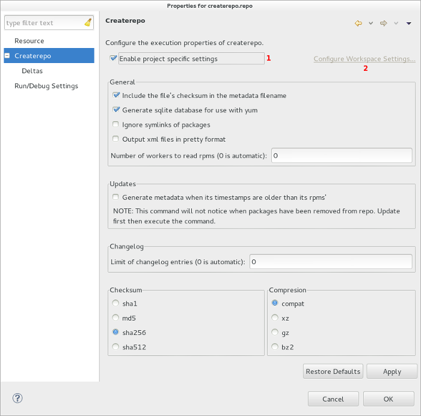
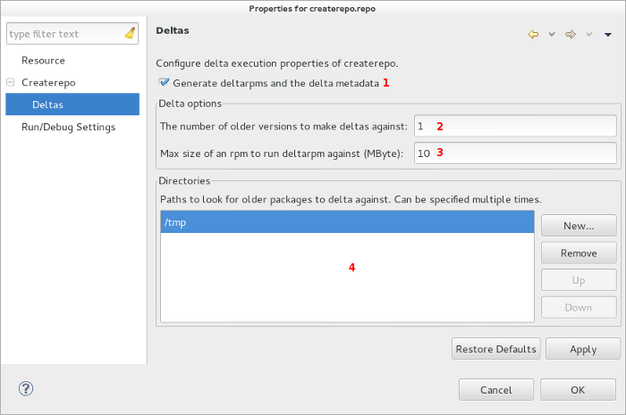

| Configuring Createrepo Execution | ||
|---|---|---|
|
|
|
|
| Configuring Specfile Editor Settings | Updating This Document | |
To configure createrepo command execution, navigate to Window > Preferences and select the
Createrepo
preference node.

createrepo to automatically determine it for the user (0 is default)createrepo with this enabled (disabled by default)
createrepo to automatically import all entries for the user (0 is default)
repomd.xml and for packages in the metadata (
sha256
is default)
The createrepo command may also be configured specific to the project/repository it is being executed on. To view/enable these settings, right-click on any Createrepo project > Properties and select the
Createrpeo
property node.
Note that these settings are only visible to projects that were created with the Createrepo project or for .repo files.
The general project properties is almost identical to the preference page, except for allowing the user to choose if they want to enable the project properties.

Deltas tells createrepo to generate deltarpms and the delta metadata. These settings are visible under the
Createrepo
>
Deltas
project property node.

|
|

|
|
| Configuring Specfile Editor Settings | Updating This Document |